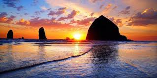

Hiking in the beautiful Gorge
Hiking in the Pacific Northwest is so fun! One of the best places to hike around is the Gorge.The Gorge runs along the northern border of Oregon and within an hour drive of Portland.


Hiking on the coast
The Oregon Coast is another great area to spend the day hiking. There are hikes up and down the entire coast. Some of the best hikes are known to be around Newport, but we encourage you to try them all.
Hiking around Crater Lake
Crater Lake is in the southern part of Oregon and is one of the more popular tourist destinations. The area is a must see while you are in the Pacific Northwest. It is beautiful in both summer and winter.
Crater Lake is beautiful in the summer!
Click here to see it in the winter